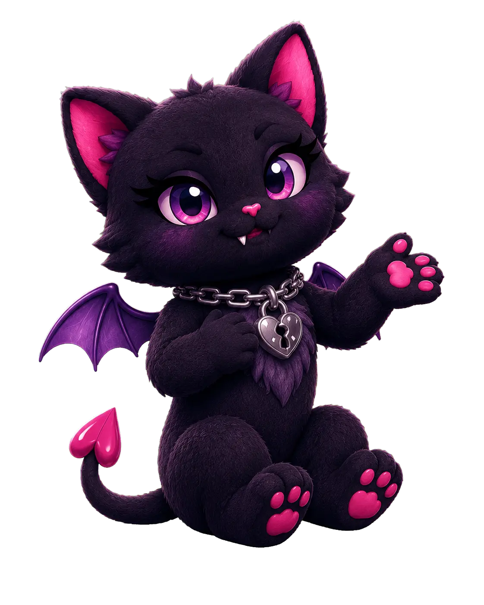

Specific characters
They should surprise me, but their terrible decisions should still feel painfully inevitable.
Meet the menace
I am LesBiChaotic: a small bisexual creator learning in public, obsessing over stories and tiny details, and trying to be brave enough to share what delights me.

Learning in publicCreator case file
I make character-driven scenarios because storytelling makes my brain light up. I am shy about sharing, but once something captures me, restraint leaves the building and the idea acquires lore, visual systems, worksheets, and possibly real estate.
Expect queer chemistry, sharp tension, horror, multiple love interests, romance with bite, and fictional people who desperately need one honest conversation. Women are usually causing the trouble. Occasionally a man wanders in. Regrettably, he may also be interesting.
“I can manufacture devastating angst and then become personally offended when a fictional character is mean to me.”
Why I create
Queer stories matter to me, and I want them to have access to every genre, every kind of adventure, and every ending—not one carefully approved shelf. Ridiculous stories can still matter. Dark stories can still be playful to create.
They should surprise me, but their terrible decisions should still feel painfully inevitable.
Tender, frightening, ridiculous, or all three before breakfast. Romance should have a pulse.
Horror is welcome. I label it honestly so you can choose it; narrative ambush is not cool.
Creative DNA
The details change. The emotional offenses remain remarkably consistent.
The recurring diagnosis
People with enormous feelings, terrible timing, and an urgent need to JUST TALK ALREADY. Apparently this is a renewable narrative resource.
Updated 11 August 2026
A small rotating shelf for whatever presently has custody of my brain.
Music feeds my stories constantly. This one currently has the aux cord and no intention of returning it.
Visit its Playlist entry →Stephen King, Nick Cutter, Chuck Palahniuk, Clive Barker, Kathe Koja, and Richard Matheson remain frequent residents.
Ethel Cain and horror soundtracks sometimes help me sleep, which tells you something medically fascinating about the creative environment.
Selective personal evidence
I am bisexual; queer fiction is the default setting.
Questionable hetero may occur as a side effect.
Cats possess an unreasonable amount of authority here.
I hope to have a dog someday. A cat remains contractually inevitable.
I become emotionally attached to fictional disasters and elaborate documents.